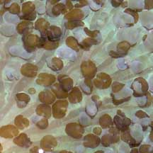

|
|
| corallimorphs text index | photo index |
| Phylum Cnidaria > Class Anthozoa > Subclass Zoantharia/Hexacorallia > Order Corallimorpharia |
| Corallimorphs Order Corallimorpharia updated Nov 2024
Where seen? These little disk-shaped animals are commonly encountered on our Southern shores, where they can sometimes form carpets over coral rubble. What are corallimorphs? Corallimorphs are Cnidarians that belong to the same Class Anthozoa as sea anemones. There are about 50 species of known corallimorphs. They are found in all parts of the ocean, from shallow to deep waters, from the tropics to even the poles. Some deeper water species can reach 1m in diameter! Features: Those seen on our shores have oral disks 1-2cm in diameter. Like sea anemones, corallimorphs are solitary polyps, although they are usually found in groups and may sometimes carpet large areas of coral rubble. Corallimorphs are distinguished by an upturned mouth in the centre of the oral disk. Most other sea anemones and corals have inward turning mouths. Corallimorphs also have a narrow body column, although this is usually hidden by the broad oral disk. The body column is usually buried in the ground or attached to a surface. Some corallimorphs tuck their oral disk into their body columns when they are exposed out of water, so they look like blobs. Their internal structure is similar to that of hard corals. But unlike hard corals, corallimorphs don't produce a hard skeleton. Corallimorphs also lack long tentacles. Corallimorphs usually have two types of tentacles: one type found on the edge of the oral disk and another kind on the surface of the oral disk. Their tentacles are usually short, some so short that the tentacles are merely bumps. Corallimorphs come in a wide range of colours and textures on the oral disk. |
 Upturned mouth. St. John's Island, May 05 |
 Underside is usually smooth. Pulau Hantu, Aug 04 |
 Oral disk tucked into the body column. St. John's Island, Aug 07 |
| What do they eat? Most corallimorphs
harbour zooxanthellae (symbiotic algae) inside their bodies. The symbiotic
algae carry out photosynthesis and may contribute nutrients to the
host. Corallimorphs also filter feed, trapping edible bits in mucus
that coats their bodies. Corallimorphs also have stingers like other Cnidarians. Some large corallimorphs can reach 30cm across or more and can eat fishes! These fishes are trapped in the muscular oral disc, similar to the way a Venus Flytrap plant catches its prey. Corallimorphs also produce toxins that seem to injure or kill hard corals or other encrusting organisms that settle near them. Corallimorph friends: Animals such as acoel flatworms and tiny shrimps are sometimes seen on corallimorphs. |
 Many usually found together, often forming a living carpet. Sisters Islands, Dec 03 |
 Dense clusters of corallimorphs may resemble hard corals. Cyrene Reef, Jun 08 |
 Covered with tiny brown acoel flatworms. St. John's Island, Jan 06 |
| Corallimorph babies: Corallimorphs
can reproduce by budding or by fission, in which the parent divides
to produce a new polyp. Role in the habitat: Corallimorphs are secondary colonisers that rapidly cover empty spaces in a reef, e.g., dead corals. Corallimorphs are more resistant against pollutants and are thus used as indicators of pollution. Status and threats: As at 2024, none of our corallimorphs are listed among the endangered animals of Singapore. Some are listed as assessed not to be approaching the criteria for being listed among the threatened animals in Singapore. While for others, there is inadequate information as at 2024 to make an informed assesment of their conservation status in Singapore. |
| Some Corallimorphs on Singapore shores |


| Order
Corallimorpharia seen on Singapore Shores from Checklist of Cnidaria (non-Sclerectinia) Species with their Category of Threat Status for Singapore by Yap Wei Liang Nicholas, Oh Ren Min, Iffah Iesa in G.W.H. Davidson, J.W.M. Gan, D. Huang, W.S. Hwang, S.K.Y. Lum, D.C.J. Yeo, May 2024. The Singapore Red Data Book: Threatened plants and animals of Singapore. 3rd edition. National Parks Board. 663 pp.
|
|
Links
References
|